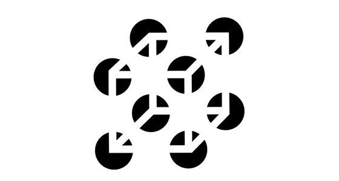

Aula 1.1 - Dados não estruturados#
MBA em Ciência de Dados#
Técnicas Avançadas de Captura e Tratamento de Dados#
Dados estruturados e não estruturados e problemas típicos em bases de dados#
Material Produzido por Moacir Antonelli Ponti
Cemeai - ICMC/USP São Carlos
1. Dados não estruturados#
Símbolos organizados em documentos de vários formatos.
Seu propósito é serem lidos e analisados por humanos dentro de um contexto cultural.
Como humanos temos capacidades de compreender dados não estruturados pois podemos:
interpretar mistura de símbolos e elementos

detectar e corrigir erros
“Ess3 texto foi escritto para mstrar como somvs capzes de corigir err0s”#
preencher informacoes faltantes

lidar com ambiguidade

reconhecer e compreender humor e sentimentos por meio de elementos complexos
Por isso são de difícil análise automática/computacional
Exemplo 1: imagens#
Imagens são exemplos de objetos não estruturados, pois seu conteúdo é projetado para interpretacão humana.
Vamos carregar duas imagens relacionadas a uma palavra chave: “cebolinha”
import imageio.v2 as imageio
import numpy as np
import matplotlib.pyplot as plt
# carregar e exibir imagens da "base de dados"
img1 = imageio.imread("imagens/cebolinha2.jpg")
img2 = imageio.imread("imagens/cebolinha3.jpg")
# exibir imagens
plt.subplot(121)
plt.imshow(img1)
plt.subplot(122)
plt.imshow(img2)
---------------------------------------------------------------------------
ModuleNotFoundError Traceback (most recent call last)
Cell In[1], line 1
----> 1 import imageio.v2 as imageio
2 import numpy as np
3 import matplotlib.pyplot as plt
ModuleNotFoundError: No module named 'imageio'
Nesse exemplo, vamos considerar que essas são as imagens de referência sobre o conceito cebolinha e agora vamos obter uma nova imagem, de consulta, a qual queremos comparar com as duas imagens de referência.
Vamos computar a distância entre a imagem de consulta, e ambas imagens referência, e considerar mais similar aquela com a menor distância. Imagens estão em formato binário, e podem ser vistas como sequências de bytes.
Há várias formas de calcular a distância. Seja um par de objetos a serem comparados: \(A\) e \(B\), cada um contendo elementos \(i=1 \cdots N\), então a distância Euclidiana é:
# carregar imagem de consulta e codificar funcao de distancia
# computar as distancias e exibir
imgQ = imageio.imread("imagens/cebolinha1.jpg")
# codificar função de distância
def img_distance(A, B):
""" Calcula a distancia Euclidiana entre dois vetores de mesmo tamanho"""
return np.sqrt( np.sum((A-B)**2) )
# computar as imagens e exibir
dQ1 = img_distance(imgQ, img1)
dQ2 = img_distance(imgQ, img2)
print("Imagem da esquerda:", dQ1)
print("Imagem da direita:",dQ2)
Imagem da esquerda: 7850.7686884788545
Imagem da direita: 5827.087265521257
Notamos que, pela distância Euclidiana, a imagem da direita é a mais similar! Vamos revelar a imagem de consulta:
# mostrar imagem de consulta
plt.imshow(imgQ)
plt.title('Query')
print(np.product(imgQ.shape))
674028

Exemplo 2: texto#
emails = ['Querido amado. Eu sou a Sra. Josan Nowak. uma viúva idosa que sofre de câncer de longa data. Estou escrevendo este e-mail para você com lágrimas pesadas em meus olhos e grande tristeza em meu coração porque atualmente estou internada em um hospital particular devido à minha condição de saúde, tenho uma doença grave de câncer. Prezado, estou entrando em contato com você para informar meu desejo. decidi doar a quantia de ($4.800.000,00 dólares) que herdei do meu falecido amado marido para trabalho humanitário, atualmente o fundo ainda está no banco, e recentemente, meu médico me disse que não posso sair devido a minha doença, tomei essa decisão porque não tenho nenhum filho que herdará esse dinheiro apósminha morte e minha saúde está piorando a cada dia, então não querouma situação em que esse fundo seja usado de maneira ímpia. Aguardo sua resposta em breve para mais informações. Sua irmã em cristo Senhora Josan Nowak',
'Olá,*****. No Banco ****** seu imóvel quitado garante oportunidades de crédito ainda melhores. Com o Crédito com Garantia de Imóvel Especial você realiza seus sonhos fazendo um empréstimo a partir de R$30 mil, com parcelas que cabem no seu bolso. Simule agora',
'*****. Seu investimento no Tesouro Direto - protocolo 130444310x - já foi liquidado no banco e sua contratação foi concluída com sucesso! Você pode acessar o Extrato do Tesouro Direto para vê-lo.']
# exibir textos e seus tamanhos
for text in emails:
print(text, end=': ')
print(len(text))
Querido amado. Eu sou a Sra. Josan Nowak. uma viúva idosa que sofre de câncer de longa data. Estou escrevendo este e-mail para você com lágrimas pesadas em meus olhos e grande tristeza em meu coração porque atualmente estou internada em um hospital particular devido à minha condição de saúde, tenho uma doença grave de câncer. Prezado, estou entrando em contato com você para informar meu desejo. decidi doar a quantia de ($4.800.000,00 dólares) que herdei do meu falecido amado marido para trabalho humanitário, atualmente o fundo ainda está no banco, e recentemente, meu médico me disse que não posso sair devido a minha doença, tomei essa decisão porque não tenho nenhum filho que herdará esse dinheiro apósminha morte e minha saúde está piorando a cada dia, então não querouma situação em que esse fundo seja usado de maneira ímpia. Aguardo sua resposta em breve para mais informações. Sua irmã em cristo Senhora Josan Nowak: 929
Olá,*****. No Banco ****** seu imóvel quitado garante oportunidades de crédito ainda melhores. Com o Crédito com Garantia de Imóvel Especial você realiza seus sonhos fazendo um empréstimo a partir de R$30 mil, com parcelas que cabem no seu bolso. Simule agora: 259
*****. Seu investimento no Tesouro Direto - protocolo 130444310x - já foi liquidado no banco e sua contratação foi concluída com sucesso! Você pode acessar o Extrato do Tesouro Direto para vê-lo.: 195
Como comparar os emails? Como obter informações que, por exemplo, permitam dizer que um deles é spam?
Alguns desafios incluem
lidar com diferentes tamanhos de strings, símbolos e números
definir função de distância
Exemplos de documentos não estruturados:
emails,
artigos,
documentos em PDF,
comentários e postagens em redes sociais,
interacão entre consumidores,
áudio,
dados adquiridos por sensores
Características de dados não estruturados:
binários e/ou caracteres
alta flexibilidade (não possuem esquema)
coleta feita com baixo controle (in the wild)
não verificados / não certificados
possuem alta redundância
possuem alta dimensionalidade
2. Dados estruturados#
Dados cujos elementos são endereçáveis, facilitando armazenamento e recuperação, organizados em um repositório formatado.
Em contrapartida aos dados não-estruturados nos quais não há um esquema que mostre o atributo ou a informação que eu desejaria recuperar mas que não é disponível de forma direta.
Dados estruturados estão prontos para ser armazenados em bases de dados relacionais, por exemplo:
username |
Primeiro Nome |
Sobrenome |
Ano de nascimento |
|---|---|---|---|
João |
Oliveira |
1996 |
|
Elizabete |
Costa Silva |
1989 |
|
Maria Cláudia |
Nunes de Souza |
1976 |
transpondo informações das imagens que mostramos no caso não estruturado:
ID |
Conceito |
Categoria |
|---|---|---|
01 |
Cebolinha |
Personagem |
02 |
Cebolinha |
Personagem |
03 |
Cebolinha |
Alimento |
Mas note que as informações estruturadas não são suficientes para dar uma idéia completa da imagem a que nos referimos! Em particular, os IDs 01 e 02 tem exatamente os mesmos dados estruturados.
Terminologia de bases relacionais#
Campo, atributo ou variável: um elemento específico para o qual temos dados, por exemplo: username na primeira tabela mostrada, relativo a coluna da tabela
Tupla ou registro: um conjunto de valores de atributos, por exemplo: (joao@provider.com, João, Oliveira, 1996), relativo à linha da tabela
Tabela ou relação: conjunto de linhas e colunas compartilhando os mesmos atributos, organizando a mesma informação acerca de um tipo de objeto
Em dados estruturados podemos ainda definir relações com outros dados.
Por exemplo, definimos duas tabelas, a primeira para a imagem, e a segunda para conceitos.
Tabela 1 - Conceitos
ID_c |
Descricão |
|---|---|
1 |
Cebolinha |
2 |
Coentro |
Tabela 2 - Imagens
ID_i |
Conceito (Conceitos->ID_c) |
Categoria |
|---|---|---|
01 |
1 |
Personagem |
02 |
1 |
Personagem |
03 |
1 |
Alimento |
04 |
2 |
Alimento |
Aqui, temos esquema, e podemos definir que, por exemplo:
ID_c, ID_i e Conceito são sempre números inteiros
ID_c não pode se repetir em tuplas distintas na tabela
ID_i não pode se repetir em tuplas distintas na tabela
Conceito pode conter apenas valores que existam em ID_c na tabela Conceitos
A possibilidade de realizar validação e controle de entrada torna esses dados mais confiáveis.
Finalmente, é possível projetar buscas para recuperar informação de forma eficiente!
conceitos = { 'ID_c' : [1, 2],
'Descricao': ['Cebolinha', 'Coentro']}
imagens = {'ID_i': [1,2,3,4],
'Conceito' : [1,1,1,2],
'Categoria': ['Personagem',
'Personagem',
'Alimento',
'Alimento']
}
import pandas as pd
df_conc = pd.DataFrame(conceitos)
df_imag = pd.DataFrame(imagens)
print(df_conc)
print()
print(df_imag)
ID_c Descricao
0 1 Cebolinha
1 2 Coentro
ID_i Conceito Categoria
0 1 1 Personagem
1 2 1 Personagem
2 3 1 Alimento
3 4 2 Alimento
df_imag[ df_imag['Categoria']=='Alimento' ]
| ID_i | Conceito | Categoria | |
|---|---|---|---|
| 2 | 3 | 1 | Alimento |
| 3 | 4 | 2 | Alimento |
c = df_conc[ df_conc['Descricao'] == 'Cebolinha']
print(c)
ID_c Descricao
0 1 Cebolinha
# use com cuidado, só funciona se a consulta anterior retornar alguma linha
df_imag[df_imag['Conceito'] == c.iloc[0]['ID_c']]
| ID_i | Conceito | Categoria | |
|---|---|---|---|
| 0 | 1 | 1 | Personagem |
| 1 | 2 | 1 | Personagem |
| 2 | 3 | 1 | Alimento |
Tipos de dados#
numéricos: mais simples de lidar podemos extrair medidas, estatísticas, etc.
categóricos: podemos medir sua frequência, mas compará-los é mais difícil
Muitos métodos estatísticos e de aprendizado de máquina não permitem trabalhar com dados categóricos diretamente!
3. Resumo e considerações finais#
Dados não estruturados:
representam grande parte dos dados disponíveis, tanto em sistemas privados quanto publicamente
continua a crescer devido a
menor custo e facilidade de aquisição
dispositivos móveis conectados
Dados estruturados:
robustos
fáceis de versionar
mais confiáveis
maior custo de manutenção
Muitos esforços são direcionados a obter dados estruturados a partir de dados não estruturados!
Nesse processo uma série de escolhas precisam ser feitas para ter sucesso no resultado desejado.